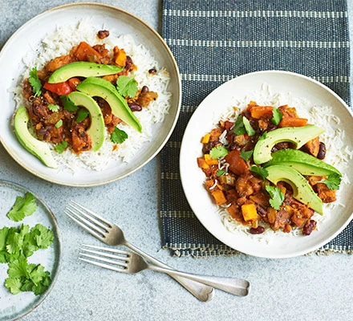

Simple Delicious White Loaf

Ingredients
- 3 tbsp olive oil
- 2 sweet potatoes, peeled and cut into medium chunks
- 2 tsp smoked paprika
- 2 tsp ground cumin
- 1 onion, chopped
- 2 carrots, chopped
- 2 celery sticks, chopped
- 2 garlic cloves, crushed
- 1-2 tsp chilli powder (depending on how hot you like it)
- 1 tsp dried oregano
- tbsp tomato purée
1
- 1 red pepper, cut into chunks
- 2 x 400g cans chopped tomatoes
- 400g can black beans, drained
- 400g can kidney beans, drained
- lime wedges, guacamole, rice and coriander to serve
Methodology
Step 1
Heat the oven to 200C/180C fan/gas 6.
Put the sweet potato in a roasting tin and drizzle over 1½ tbsp oil,
1 tsp smoked paprika and 1 tsp ground cumin.
Give everything a good mix so that all the chunks are coated in spices,
season with salt and pepper, then roast for 25 mins until cooked.
Step 2
Meanwhile, heat the remaining oil in a large saucepan over a medium heat.
Add the onion, carrot and celery. Cook for 8-10 mins, stirring occasionally until soft,
then crush in the garlic and cook for 1 min more. Add the remaining dried spices and tomato purée.
Give everything a good mix and cook for 1 min more.
Step 3
Add the red pepper, chopped tomatoes and 200ml water.
Bring the chilli to a boil, then simmer for 20 mins.
Tip in the beans and cook for another 10 mins before adding the sweet potato.
Season to taste then serve with lime wedges, guacamole, rice and coriander.
Will keep, in an airtight container in the freezer, for up to three months.
Home
Delicioius White Loaf